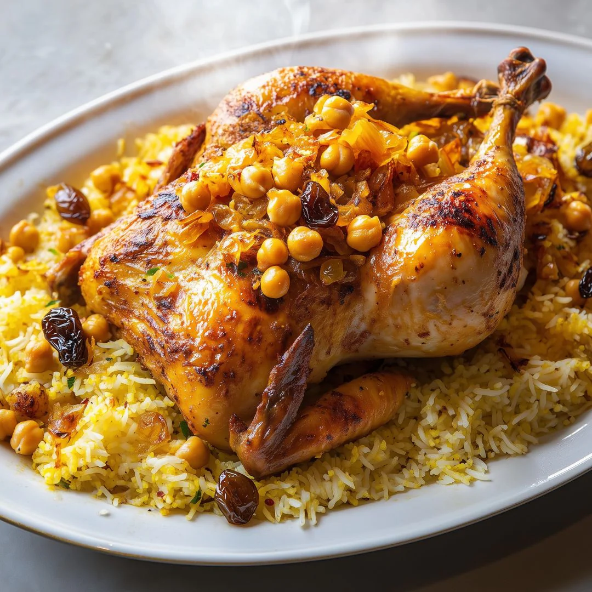
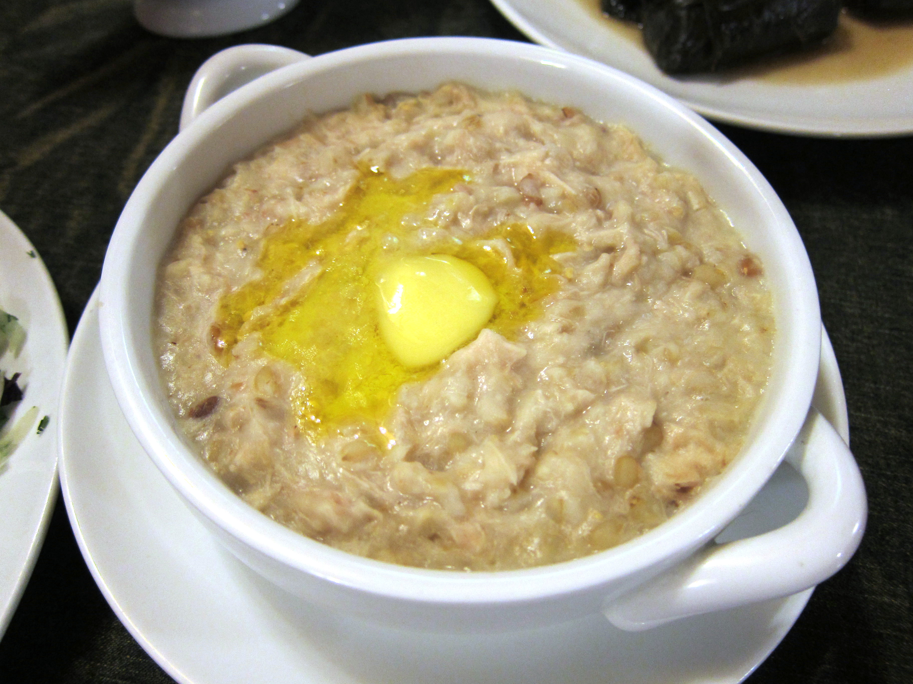
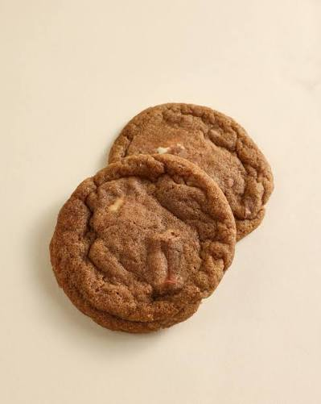

Chicken Majboos
OMR 3.5004.8 ★ · 126 reviews
Nizwa, Oman
Mariam has been cooking traditional Omani dishes for over 15 years, learning recipes passed down from her mother and grandmother in Nizwa. She specializes in slow-cooked rice dishes and always uses spices she grinds herself, the same way her family has for three generations.
210
Completed Orders
15
Years Cooking
4.9
Average Rating

4.8 ★ · 126 reviews

4.7 ★ · 64 reviews

4.9 ★ · 41 reviews